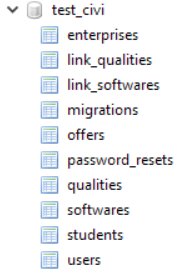

Notre projet tutoré
de 1ère année

Quel est le principe de la plateforme ?
- Donner un accès aux CVs des MMI en première année
- Permettre aux entreprises de déposer des offres de stage
- Ce que nous avons apporté
- Ce que nous avons de spécial
- Ce que nous avons utilisé
- Comment nous avons géré le projet
- Nos CV intéractifs et bilans personnels
Ce que nous avons apporté
Des objectifs
Sur le thème : faciliter la rencontre étudiants/entreprises
- Faciliter la découverte d'étudiants
- Faciliter la quête d'un stage
Des fonctions
- La recherche, qui permet de trouver l'étudiant parfait, grâce à de nombreux critères pertinents
- Le dépôt d'offres facile, qui contient toutes les informations de l'entreprise
Une identité
- Le nom : CiVi
- Une palette de couleurs :
- Le Logo :

Nous nous démarquons des autres par :
-
Notre design
-
Notre recherche avancée
-
Notre système d'inscription
Nos technologies

HTML/CSS

PHP

MySQL

Algolia
HTML / CSS
PHP
Laravel
Laravel Scout
public function enterprise() {
return $this->belongsTo('App\Enterprise');
}
//On peut ensuite obtenir les informations de l'entreprise liée à l'offre :
$offer->enterprise->name
Eloquent
MySQL
Algolia
Notre gestion de projet
1. La Communication
2. Planning
3. Workflow


4. Les Outils


5. Les Erreurs
Problèmes et solutions
Notre CV
Nos impressions sur le projet
Conclusion
- Des fonctions optionnelles
- Un produit fini
- La RGPD : pas compatible
- Un projet formateur